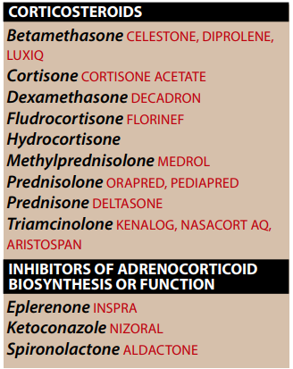
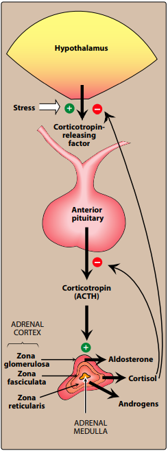

OVERVIEW
→ adrenal gland consist of
- cortex [adrenocorticoisteroids (glucocricoids,minerlacorticoids) + adrenal androgen
- medulla [epinephrine]
1.Outer zone glomerulosa produce
- mineralcorticoids (aldosterone)
- which is responsible for regulating salt and water
- glucocorticoids (cortisol)
- invovled with normal meatbolism and resistance to stress.
- secretes adrenal androgens (dehydroepiandrosterone)
- ACTH [pituitary adrenocorticitropic hormone] - [ corticotropin ]
- which released in response to CRH [hypothalamic corticitrioin-releasing hormone] - [croticotropin-releasing factor]
- feedback inhibitors of corticotropin and CRH secretion.
- treatment and managment of asthma
- other inflammatory diseases
- treatment of severe allergic reactions
- treatment of some cancers.
ADRENOCROTICOSTEROIDS
→ bind to specific intracellular cytoplasmic receptors in target tissues
[glucocorticoid receptors are widely distributed throughout the body,while mineralcorticoids confined mainly in the excretory organs such as kidney,colon and salivary/sweat glands] — [ both found in the brain]
→ after dimerizing
- receptor-hormone recruit co-activator proteins
- complex translocates into the nucleus
- where attaches to gene promoter elements.
- acting as transcription factor to turn genes on.
- where attaches to gene promoter elements.
- complex translocates into the nucleus
- this mechanism requires time to produce an effect.
GLUCOCORTICOIDS

→ Cortisol is the principle human glucocorticoid.
→ production is diurnal
- with peak early in the morning
- followed by decline and then
- secondary,smaller peak in the late afternoon.
- followed by decline and then
1.Promote normal intermediary metabolism
→ gluco. favor gluconeogenesis through ↑ amino acid uptake by the liver and kidney
→ stimulate protein catabolism and lipolysis.
- providing building blocks and energy that are needed for glucose synthesis.
→ lipolysis results as a consequency of the glucorticoid augmenting the action of growth hormone on adipocytes.
- causing an ↑ in the activity of hormone-sensitive lipase.
2.Increase resistance to stress
→ ↑ plasma glucose levels
- gluco. provides the body with energy it requires to combact stress.
- by enhancing the vasoconstrictor action of adrenergic stimuli on small vessels.
→ ↓ in eosinophilis,basophilis,monocytes and lymphocytes
- by resdistributing them from the circulation to lymphoid tissue.
- in contrast to this effect,gluco. increase the blood levels of hemoglobin,erythrocytes,platels,
4.Have anti-inflammatory action
→ important therepeutic property of the gluco. is their ability to ↓ the inflammataory process and supress immunity.
→ moa is complex and incompletely understood
→ also involved in the indirect inhibition of phospholipase A2 [due to the steroid-mediated elevation of lipocortin]
- which blocks the release of arachidonic acid
→ mast cell degranulation results in ↓ histamaine and capillary permability.
5.Affect other compenents of the endocrine system
→ feedback inhibition of corticotropin production by elevated glucocorticoids cauases inhibition of further synthesis of both
glucocorticoid and thyroid-stimulating hormones.
6.Can have effects on other systems
→ cortistol levels are essential for normal glomerular filtration.
→ effects of corticosteroids on other systems are mostsly associated with the advrese effects of the hormones.
→ high doses of gluco. stimulate
- gastric acid and pepsin production and may exacerbate ulcers.
→ chronic gluco. therapy can → severe bone loss and myopathy
MINERALCORTICOIDS
→ help to control the body's
- water volume
- concentration of electrolytes (sodium and potassium)
- reabsorption of sodium , bicarbonate , water
- ↓ reabsrorption of potassium and H+ then lost in the urine.
- GIT , sweat and salivary gland
Therapeutic uses of the adrenal corticosteroids
1.REPLACEMENT THERAPY FOR PRIMARY ADRENOCORTICAL INSUFFICIENCY (Addison disease)
→ adrenal cortex dysfunction (lack to corticotropin response to corticotropin)
→ Hydrocortistone
- identical to natural cortistol is given to correct the deficiency
- dose is divided
- 2/3 of the normal dose is given in the morning
- 1/3 in the afternoon
- potent synthetic mineralcorticoidsone help to ↑
→ caused by defect either in CRH production by the hypothalamus or in corticotropin production by the pituitary.
[under these condintion,the synthesis of mineralcorticoids in the adrenal cortex is less impaired than that of glucocorticoids]
→ Hydrocortistone is used for treatment of these deficiencies.
3.DIAGNOSIS OF CUSHING SYNDROME
→ is caused by hypersecretion of glucocorticoids that results either from excessive release of corticotropin
by the anterior pituitary or an adrenal tumor.
4.REPLACEMENT THERAPY FOR CONGENITAL ADRENAL HYPERPLASIA
→enzyme defect in the synthesis of one or more of the adrenal steroid hormones.
→ admin. of sufficient corticosteroids to normalize the patient's hormone levels by suprresing
- release of CRH and ACTH.
- ↓ production of adrenal androgens
5.RELIEFE OF INFLAMMATAORY SYMPTOMS.
→ because of redistribution of leukocytes to other body compartments
- ↓ blood conc.
- ↓ in conc. of lymphocytes(T & B cells).basphilis,eosinophilis,monocytes
- and inhibition of th ability of leukocytes and macrophages to respond to mitogens and antigens
→ also stabilize mast cells and basophil memebranes (inhibiting histamine release)
- diminishing the activation of the kinin system.
→ bronchial asthma,allergic rhinitis and tranfusion allergic reactions.
- these drugs are not curative
- applied topically to the respiratory tract trhough inhalation from a metered dose dispenser.
- minimizes systemic effects
- reduce or eliminate the use of oral steroid.
- minimizes systemic effects
→ respiratory distress syndrome is a problem in premature infants
→ Betamethasone or dexamethasone intramusculary
- to the mother 48 hours prior to birth
PHARMACOKINETICS
→ orally and readily absorbed frmo the GIT
→ intravenously , intramuscularrly, intra-articulary , topically, aerosol (oral inhalation,intranasal)
→ 90% is bound to plasma protein
- globulin and albumin
- metabolites conjugated glucuronic acid and sulfate.
→ half-life may ↑ with hepatic dysfunction.
→ topical therapy may cause
- skin atrophy ecchymoses , dermatoses and cataracts
Adverese Effects
→ osteoporosis must common adverse effects
- due to the ability to supress intestinal Ca2+ absorption , inhibit bone formation , ↓ sex synthesis.
- calcium and vitamin D supplements.
- redistribution of body fat, puffy face , ↑body hair growth, isomnia ,↑ appetite.
→ Hyperglycemia may develop and led to diabetes
→ Hypokalemia also occur
- can be counter acted by potassium supplementantion.
Withdrawal
→ if the patients has ben experianced HPA suppresion
- can cause acute adrenal insufficiency syndrome that can be lethal
- possibly through trial and error.
INHIBITION OF ADRENOCORTICOID BIOSYNTHESIS OR FUNCTION
1.Ketoconazole
→ antifugnal agent that strongly inhibit all gonadal and adrenal steroid hormone synthesis.
- in patients with Cushing syndrome
2.Spirolactone
→ antihypertensive drug competes for the mineralcorticoids receptor
- inhibit sodium reabsorption in the kideny
3.Eplerenone
→ specifically bind to the mineralcorticoid receptor
- acts as aldosterone antagonist
- this specificity avoids side effects such as gynecomastia that associated with spirolactone.
{kind=link}
{kind=link}
{kind=link}
{kind=link}